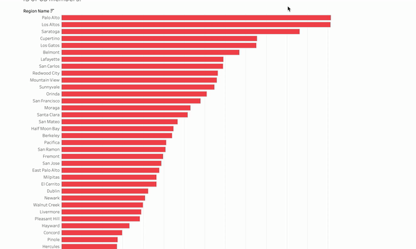
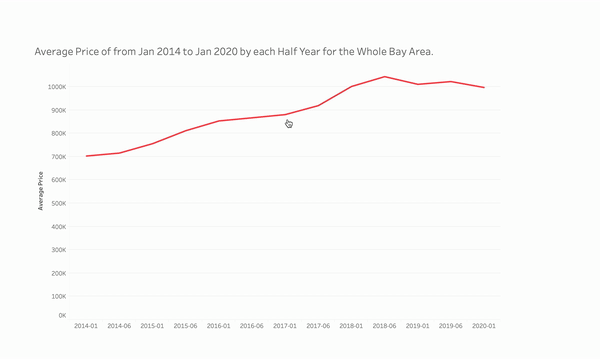
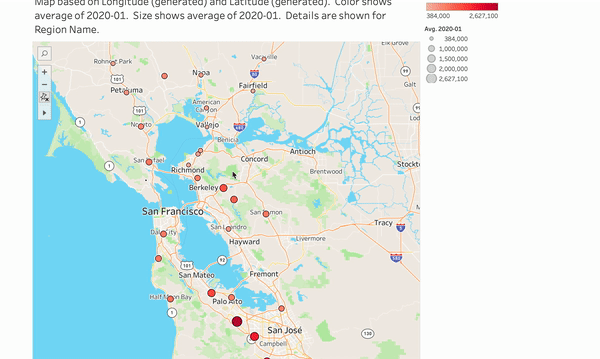
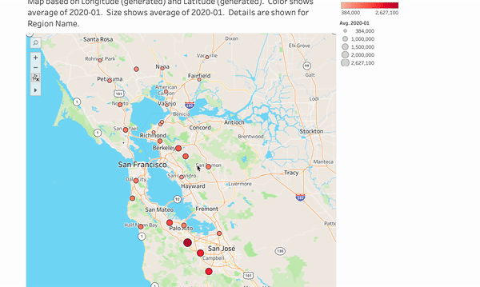
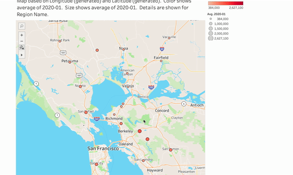

Question
Home Price
- What is the trend of the home price of the bay area in the last 5 years?
What cities in the bay area have the highest home price in Jan 2020?
Count of Home Sales
- What is the count of home sales of all cities in the bay area?
- What is the trend of the count of home sales of the bay area in the last 5 years?
Answer
Home Price
- According to the map, the south part of the bay area has a higher home price, following by the central part, while the north bay area has a lower home price.
- According to the line chart, the average home price in the bay area kept growing and peaked at Jun 2018, but it started to drop in the following years.
Count of Home Sales
No answer at the moment yet.
Prototype 1
Bar Chart: Average Price of Feb 2020 for each Region Name. The view is filtered on Region Name, which keeps 43 of 63 members.
Encoding
- X-Axis: Average home price in the month of Jan 2020
- Y-Axis: City names in the bay area
Interactivity
Tooltip & Highlight
Sorting
Prototype
Prototype 2
Line Chart: Average Price of from Jan 2014 to Jan 2020 by each Half Year for the Whole Bay Area.
Encoding
- X-Axis: Time period of each half year from Jan 2014 to Jan 2020
- Y-Axis: The average home price of the whole bay area
Interactivity
Tooltip
Prototype

Prototype 3
Map: Map based on Longitude (generated) and Latitude (generated). Color shows average of 2020-01. Size shows average of 2020-01. Details are shown for Region Name.
Encoding
- Circle: Major cities in the bay area showed in the dataset
- Color: Average home price in Jan 2020
- Size: Currently also the average home price in Jan 2020, but will change to count of home sales in Jan 2020 in the implementation
Interactivity
Tooltip
Zooming
Dragging
(Maybe) Filter
Prototype
Feedback from Classmates
Adjustments Based on Feedback
-
Color
I think I already did a good job on the color, so I don't want to change the whole thing here. But I see that the bar is not so interesting with only one color, so I adjusted the bar's color to match the legend as well, which also means the count of home sales.
-
Title
I definitely agree that using “home” makes more sense than “house”, so I change the noun of the title with “home” over “house”.
-
Line Chart Space
I also noticed the problem that the line chart has too much white space on the bottom since it’s a line chart, we don’t necessarily need to start from 0, so in the final, I replace the 0 with the minimum to reduce the unused white space.
-
Implementation
A very important one, putting three separate graphs here seems very unnecessary and loose. Thanks to my professor’s advice, I changed my mind and implemented all three different types of graphs into one BIG graph, with the map as the main body and the rest as a sidebar. I also added some interactivities to make them connected, this is the biggest progress and now things work consistently.
-
Interactivity
I also agree that the map doesn’t provide information for the trend and the trend is a very important element that people want to see, especially in my major visualization. So the way that I figured out was also using a sidebar for the line chart, so people can see the map and the trend at the same time. In case to not squeeze with the bar, which takes a lot of space, I added a dropdown that allows users to choose which visualization to show.
Last but not least, I really love the idea that to interact with the map to show a trend or number about the specific city, so I added clicking interactivity on the circle, which will display a more detailed panel on the sidebar with almost all information I want for that clicked city.
Instructor
Alpha Release
The dataset is a great choice, but it may need some work to wrangle the data for this project. Because the original data in Zillow doesn't have a sequential time period and geographic information for cities.
For the final project, we are expecting a multi-components visualization, only a bar chart may not meet this requirement and not enough to get a good grade.
Beta Release
A proportion map is a great choice for this topic, and the color for price and size for count make sense here.
In the map prototype, there’s no way we can see the trend of price and count, it would be great if you can connect the line chart with the map.
You can try to implement interactivity to the map or line chart, for example, it will be really cool if you can display the line chart when users hover on the map.
Alex Wang
Visual Encodings
On the symbol map visualization the size and color for major cities seems clear for readers to know immediately about the average house price
Non-Color Encodings
The average house price is used as quantitative variable, and it seems fine if the author wants to explore how does the price behave in different perspectives such as by time, by geographic or the ranking.
Color Encodings
It is nice that the red color is consistent among all the prototypes, but since on the map visualization, the extent of "how red it is" represents a data value, maybe in other graphs could use other colors?
Context
The context like tick labels and legends are really clear.
Lie Factor
No lie factor.
Data Ink Ratio
High data ink ratio.
Data Density
High data density.
Gestalt Principles
Gestalt principles used well.
Planned Interactivity
The on-demand detail tooltip makes it clear for readers.
Planned Interaction Effectiveness
Very Good.
Design and Aesthetics
Very Good.
Understanding
From the map visualization it seems that cities with relatively higher average house prices are closer to each other.
Visualization Goal
Very Good.
Visualization Effectiveness
Very Good.
Enrique Bascur
Visual Encodings
prototype 1:
X-Axis: Average house price in the month of Jan 2020
Y-Axis: City names in the bay area
prototype2:
X-Axis: Time period of each half year from Jan 2014 to Jan 2020
Y-Axis: The average house price of the whole bay area
prototype3:
Circle: Major cities in the bay area showed in the dataset
Color: Average house price in Jan 2020
Size: Currently also the average house price in Jan 2020, but will change to count of house sales in Jan 2020 in the implementation
Non-Color Encodings
Everything looks good and organized, the only slight problem I saw was that in the first prototype the x-axis count should turn to millions at the end. 2600k seems a bit awkward.
Color Encodings
There's no excessive or unnecessary use of color
Context
It would be good if the title said 'average price of homes' but outside of that everything is easily understadable
Lie Factor
In general very good data.
The number scale on prototype 1 could be misleading, it's technically correct but could be better labeled.
The only other issue I have is what is considered the bay area. For example Vacaville is halfway to Sacramento from San Francisco.
Data Ink Ratio
For prototype 1 the data ink ratio is good. The bars fill in where they need to.
For prototype 2 it's fairly low. there is a single line on a mostly white chart.
Data Density
The data density is similar to the data ink ratio.
Gestalt Principles
Very good for prototype 1
Prototype 2 the line gets lost in all the white space.
Planned Interactivity
Prototype 1 has sorting for the bar chart
Prototype 2 has acircle on click that shows information on demando
Prototype 3 has zooming and a tooltip
Planned Interaction Effectiveness
It gives all the information needed.
Design and Aesthetics
The bar chart is good, lots of color and fills up the chart, easily readable.
The line chart could be better it seems a little too uncolorful. Maybe the gridline could e darker.
Understanding
Good visualizations easy to understand.
Visualization Goal
I can see the average cost per region for a home. Goal achieved.
Visualization Effectiveness
It achieves what you want.